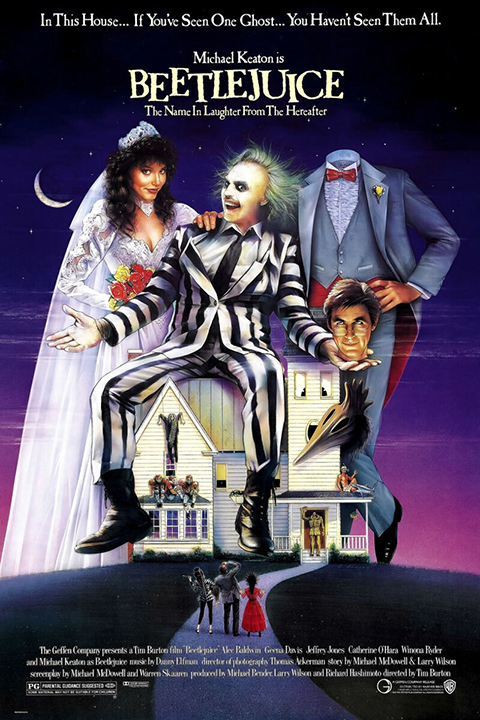

About
Beetlejuice follows a recently deceased couple, Adam and Barbara Maitland, who become ghosts haunting their former home. When a new family, the Deetzes, moves in, the Maitlands try to scare them away but find their efforts largely unsuccessful. Desperate for help, they summon the obnoxious and mischievous spirit Beetlejuice, who offers to assist them but has his own chaotic agenda. As the Maitlands navigate the challenges of their afterlife, they ultimately learn valuable lessons about letting go and acceptance. The film blends dark comedy, fantasy, and supernatural elements, making it a unique and memorable experience.
Details
Director: Tim Burton
Release Date: March 30, 1988